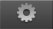

|
EasyRoads3D V3 Manual | |
General Workflow
The EasyRoads3D v3 system is designed to minimize the amount of time you have to spend on setting up parameters and properties in the Inspector for each road or crossing in the scene in order to maximize productivity. Before starting creating roads it is recommended to setup road types and materials. You will always be able to expand the available road types, materials, crossing prefabs at any time but it is good practise to start with this so you have your main road types set up and quickly available in the scene. The recommended workflow for this depends on the nature of your project and if you want to use your own road types, materials, crossing types or if you want to use the default options that come with EasyRoads3D. If you want to use your own materials and crossings then it is recommended to read this section. Additionally, EasyRoads3D uses ordinary gameobjects together with the Unity Terrain Object. It is recommended to have a basic knowledge of these objects and their components (MeshFilters, renderers, colliders and materials, but also the terrains grid based nature, heightmapscale which influences how the terrain will be updated to the terrain network) to quickly get familiar with the tool.
When you create a new road in the scene or road type in General Settings you probably want to assign a specific material to this new road road, asphalt, dirt / gravel, etc. In Unity this works by creating a new material and assigning textures and a shader to the new material through drag / drop operations in the project panel and Inspector. In EasyRoads3D v3 you can improve this workflow by first preparing your materials and store them respectively in /Assets/EasyRoads3D/Resources/Materials/roads, /Assets/EasyRoads3D/Resources/Materials/crossings or /Assets/EasyRoads3D/Resources/Materials/roundabouts. Whenever you create a new road type or road in the scene you can quickly select the material from the available materials dropdown in the Inspector or for example the Custom Crossings Editor Window.
You can create a new road in the scene through the Add New Road tab . You will be able to set the road width and material. However, it is recommended to setup road types in "General Settings"  . These road types will be selectable from the Road Types dropdown in the Add New Road tab. This is especialy useful when creating road networks with different types of roads that will be required repeatedly. These road types can also be assigned to crossing connections when creating your own project specific crossings and / or connection objects. Road specific properties such as the width and the material will be automatically assigned to the crossing. Another advantage of using road types is that If you want to change for example the width or material of a specific road type, you only have to update that road type in General Settings > Road Types. Afterwards you can press "Update Scene Instances". All roads of that type will update.
Step 3 Crossing / Connection Prefabs [Pro] Before starting to create your road network in the scene it is recommended to think about what type of crossings you need, X-crossings, T-crossings, roundabouts, the rounding radius of the corners, sidewalks, geometry / UV layout, LOD levels, etc. You can use the default crossings that come with the package, but with EasyRoads3D v3 you can also create prefabs of customized versions of these crossings and reuse them in the scene. Existing source prefabs can be cloned to add variation. For example, clone an already customized X-crossing with specific rounding radius and LOD and use it for another road type by selecting that road type from the road presets dropdown in the Connection Settings . For each crossing type individual prefab instances in the scene can be amended to add variation if required. But by first creating a set of different crossing prefabs that will be repeatedly used in the scene, valuable time. can be saved. Click here for more info on how to create new crossing presets and customize them. Next to customizing dynamic crossings there is the Custom Crossing / Connection prefabs option. These are prefabs based on your own meshes. This system is powerful and allows you to integrate any crossings type you want. Click here for more info on how to create custom crossing connections and other irregular road shapes.
Step 4. Creating the Road Network Once you have completed creating your road types and, optionally, your project specific crossings it is time to create your unique road network in the scene. Click here for info on how to add and build roads and crossing in the scene.
|
|